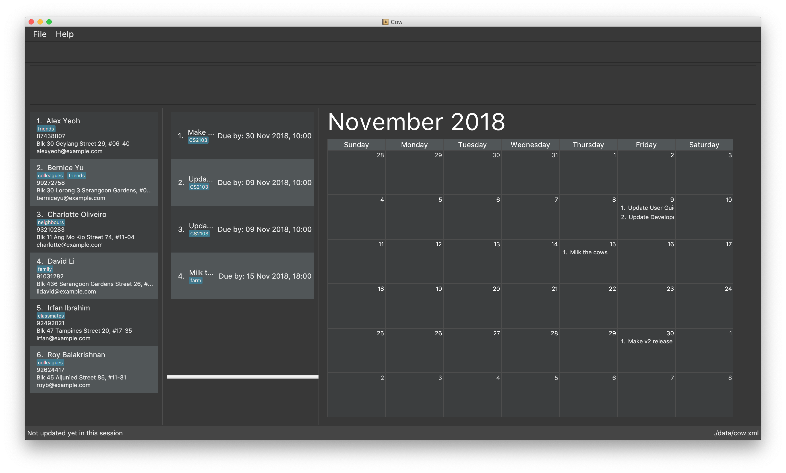

By: Team T09-1 Since: Aug 2018 Licence: MIT
- 1. Introduction
- 2. Quick Start
- 3. Features
- 3.1. Viewing help:
help - 3.2. Contacts
- 3.2.1. View all contacts:
contacts list - 3.2.2. Add contact:
contacts add - 3.2.3. Edit contact:
contacts edit - 3.2.4. Find contact:
contacts find - 3.2.5. Delete contact:
contacts delete - 3.2.6. Assign tasks to contact:
contacts assign - 3.2.7. Unassign tasks from contact:
contacts unassign - 3.2.8. Show tasks assigned to contact:
contacts assigned
- 3.2.1. View all contacts:
- 3.3. Tasks
- 3.3.1. View all tasks:
tasks list - 3.3.2. Add task:
tasks add - 3.3.3. Edit task:
tasks edit - 3.3.4. Search for task:
tasks find - 3.3.5. Select a task:
tasks select - 3.3.6. Delete task:
tasks delete - 3.3.7. Delete all tasks:
tasks delete all - 3.3.8. Assign person to task:
tasks assign - 3.3.9. Unassign person from tasks:
tasks unassign - 3.3.10. Show full details of a task:
tasks assigned
- 3.3.1. View all tasks:
- 3.4. Calendar
- 3.5. Global
- 3.1. Viewing help:
1. Introduction
Cow is an application for those who prefer to use a desktop app for managing tasks and contacts. It is optimized for those who prefer to work with a Command Line Interface (CLI) while still having the benefits of a Graphical User Interface (GUI). If you can type fast, Cow can get your contact and task management done faster than traditional GUI apps.
2. Quick Start
-
Ensure you have JRE 9 or later installed.
-
Download the latest
.jarfile here. -
Place it in the folder where you want the data files to be stored.
-
Double-click the
.jarfile to start the app. The GUI should appear in a few seconds -
Type in a command and press Enter to execute it. For a start, type
helpand press Enter to see the help page. -
Some example commands you can try:
-
contacts list: lists all contacts -
contacts add n/John Doe p/98765432 e/johnd@example.com a/311, Clementi Ave 2, #02-25 t/friends t/owesMoney: adds contact namedJohn Doeto Cow -
tasks list: lists all tasks -
tasks delete 2: deletes the 2nd task shown in the list -
exit: exits Cow
-
| Ensure that your screen resolution is at least 1200x800, or the calendar might not show properly. |
3. Features
Command Format
-
Words in
UPPER_CASEare the parameters to be supplied by the user e.g. incontacts add n/NAME,NAMEis a parameter which can be used ascontacts add n/John Doe. -
Items in square brackets are optional e.g
n/NAME [t/TAG]can be used asn/John Doe t/friendor asn/John Doe. -
Items with
…after them can be used multiple times including zero times e.g.[t/TAG]…can be used as\(i.e. 0 times),t/friend,t/friend t/familyetc. -
Parameters can be in any order e.g. if the command specifies
n/NAME p/PHONE_NUMBER,p/PHONE_NUMBER n/NAMEis also acceptable.
When INDEX is a parameter, it refers to the index of the item shown on the task or person list.
|
| Don’t worry about having friends or tasks with the same name — just add them and Cow will process them correctly. |
3.1. Viewing help: help
Format: help
| Besides this help page, running a command with the wrong format will also show you how to use the command properly. |
| The help page will be shown in another window, but you can resize and move it around. This can be useful to refer to when using the app. |
3.2. Contacts
| You are allowed to have entries with the same name. |
3.2.1. View all contacts: contacts list
Shows a list of all people in Cow.
Format: contacts list
3.2.2. Add contact: contacts add
Adds a person to Cow.
Format: contacts add n/NAME p/PHONE_NUMBER e/EMAIL a/ADDRESS [t/TAG]…
| A person can have any number of tags (including 0). |
Examples:
-
contacts add n/John Doe p/98765432 e/johnd@example.com a/1 Cow Ave, #02-25 t/intern -
contacts add n/Jane Smith p/92948232 e/janes@example.com a/10 Cow Boulevard #02-25 t/employee
3.2.3. Edit contact: contacts edit
Edits an existing person in Cow.
Format:
contacts edit INDEX [n/NAME] [p/PHONE] [e/EMAIL] [a/ADDRESS] [t/TAG]…
Examples:
-
contacts edit 1 p/91234567 e/johndoe@example.com
Edits the phone number and email address of the 1st person to be91234567andjohndoe@example.comrespectively. -
contacts edit 2 n/Jane Doe t/
Edits the name of the 2nd person to beJane Doeand clears all existing tags.
3.2.4. Find contact: contacts find
Finds people whose names contain any of the given keywords.
Format: contacts find KEYWORD [MORE_KEYWORDS]
Examples:
-
contacts find John
ReturnsjohnandJohn Doe -
find Betsy Tim John
Returns any person having namesBetsy,Tim, orJohn
3.2.5. Delete contact: contacts delete
Deletes the specified person in Cow.
Format: contacts delete INDEX
Examples:
-
contacts list
contacts delete 2
Deletes the 2nd person in Cow -
contacts find Jane
contacts delete 1
Deletes the 1st person in the list of people resulting from thecontacts findcommand
3.2.6. Assign tasks to contact: contacts assign
Assigns a task to a specified person in Cow.
Format: contacts assign c/CONTACT_INDEX k/TASK_INDEX
Examples:
-
contacts list
tasks list
contacts assign c/2 k/1
Assigns the 2nd person in Cow to the 1st task in Cow -
contacts find Alex
tasks list
contacts assign c/1 k/3Assigns the 1st person in the list of people resulting from thecontacts findcommand to the 3rd task in Cow
3.2.7. Unassign tasks from contact: contacts unassign
Unassigns a task from a specified person in Cow.
Format: contacts unassign c/CONTACT_INDEX k/TASK_INDEX
Examples:
-
contacts list
tasks list
contacts unassign c/2 k/1
Unassigns the 2nd person in Cow from the 1st task in Cow -
contacts find Alex
tasks list
contacts assign c/1 k/3Unassigns the 1st person in the list of people resulting from thecontacts findcommand from the 3rd task in Cow
3.2.8. Show tasks assigned to contact: contacts assigned
Displays all tasks assigned to the specified contact in the tasks pane.
Format: contacts assigned INDEX
The person specified at INDEX will be highlighted, and the tasks assigned are
displayed on the displayed tasks list.
|
Examples:
-
contacts assigned 2
Displays all tasks assigned to the 2nd person in the current displayed person list. -
contacts find Jane
contacts assigned 1Displays all tasks assigned to the 1st person in the list of people resulting from thecontacts findcommand
3.3. Tasks
Format for entering dates is YYYYMMDD, e.g. 20183112.
Format for entering times is HHMM in 24-hour time, e.g. 2359.
Most tasks commands has similar format to their equivalent in contacts, except
that they have different prefixes (tasks vs contacts).
|
| You are allowed to have entries with the same name. |
3.3.1. View all tasks: tasks list
Shows a list of all tasks in Cow.
Format: tasks list
3.3.2. Add task: tasks add
Adds a task to Cow.
Format:
tasks add n/TASK_NAME [sd/START_DATE] [st/START_TIME] ed/END_DATE et/END_TIME [t/TAG]…
| If start date or time is not entered, the missing field(s) will default to the current date/time. |
Examples:
-
tasks add n/Math Assignment sd/20180101 st/0000 ed/20181231 et/2359 t/school t/urgent -
tasks add n/Milk the cows sd/20181001 st/0000 ed/20181129 et/2359 t/farm
3.3.3. Edit task: tasks edit
Edits an existing task in Cow.
Format:
tasks edit INDEX [n/TASK_NAME] [sd/START_DATE st/START_TIME] [ed/END_DATE et/END_TIME] [t/TAG]…
Examples:
-
tasks edit 1 sd/20050108 st/1235
Edits the start date and time of the 1st task to be 8 January 2005, 12:35pm. -
task edit 2 n/Brush the cows t/
Edits the name of the 2nd task to beBrush the cowsand clears all existing tags.
3.3.4. Search for task: tasks find
Find tasks that based on name, start date, end date and/or tags
Format:
tasks find [n/KEYWORD]… [sd/START_DATE] [ed/END_DATE] [t/TAG]…
Examples:
-
tasks find ed/20181130
Displays all tasks whose end date is 30 November 2018 -
tasks find n/Cows t/farm
Displays all tasks whose name containsCowsand has tagfarm
3.3.5. Select a task: tasks select
Selects the task identified by the index number used in the displayed task list.
Format: tasks select INDEX
Examples:
-
tasks list
tasks select 2
Selects the 2nd task in Cow. -
tasks find ed/20181130
tasks select 1
Selects the 1st task whose end date is 30 November 2018
3.3.6. Delete task: tasks delete
Deletes all tasks corresponding to the indices provided.
Format: tasks delete INDEX1 [INDEX2] [INDEX3] …
Examples:
-
tasks delete 1
Deletes the 1st task on the displayed task list -
tasks delete 1 5 4
Deletes the 1st, 4th and 5th tasks in the displayed task list
3.3.7. Delete all tasks: tasks delete all
Deletes all tasks that are shown in the displayed task list.
Format: tasks delete all
If you accidentally deleted all tasks in the displayed task list, use undo to
recover deleted tasks.
|
3.3.8. Assign person to task: tasks assign
Assigns a person to a specified task in Cow.
Format: tasks assign k/TASK_INDEX c/CONTACT_INDEX
Examples:
-
contacts list
tasks list
tasks assign k/1 c/2
Assigns the 1st task in Cow to the 2nd person in Cow -
contacts list
tasks find n/Cows
contacts assign k/3 c/1
Assigns the 3rd task in the list of tasks resulting from thetasks findcommand to the first person in Cow
3.3.9. Unassign person from tasks: tasks unassign
Unassigns a person from a specified task in Cow.
Format: tasks unassign k/TASK_INDEX c/CONTACT_INDEX
Examples:
-
contacts list
tasks list
tasks unassign k/1 c/2
Unassigns the 1st task in Cow to the 2nd person in Cow -
contacts list
tasks find n/Cows
tasks assign k/3 c/1
Unassigns the 3rd task in the list of tasks resulting from thetasks findcommand to the first person in Cow
3.3.10. Show full details of a task: tasks assigned
Displays the contacts assigned to the task.
Format: tasks assigned INDEX
The task specified at INDEX will be selected and showed in the task details pane,
and the people assigned to it are displayed on the displayed person list.
|
Examples:
-
tasks assigned 2
Displays all people assigned to the 2nd task in the current displayed task list. -
tasks find n/Cows
tasks assigned 1Displays all people assigned to the 1st task in the list of tasks resulting from thetasks findcommand
3.4. Calendar
3.4.1. View calendar for tasks due within given year and month: calendar show
Populates the calendar panel with tasks from the specified month.
Format: calendar show y/YEAR m/MONTH
| Entries from the end of the previous month and the start of the following month may also be displayed depending on the length and start day of the specified month. |
3.4.2. List tasks for a specific day: calendars list [coming in v2.0]
Format: calendars list ed/END_DATE
3.4.3. Share calendar: calendars share [coming in v2.0]
Format: calendars share CONTACT_INDEX
3.5. Global
3.5.1. Undo previous command undo
Restores Cow to the state before the previous undoable command was executed.
Format: undo
|
Undoable commands are commands that modify tasks, contacts and assignments thereof in Cow
(commands containing |
Examples:
-
tasks delete 1
tasks list
undo(reverses thetasks delete 1command) -
tasks select 1
tasks list
undo
Theundocommand fails as there are no undoable commands executed previously. -
contacts delete 1
contacts assign c/1 k/2
undo(reverses thecontacts assign c/1 k/2command)
undo(reverses thecontacts delete 1command)
3.5.2. Redo previously undone command redo
Reverses the most recent undo command.
Format: redo
Examples:
-
tasks delete 1
tasks list
undo(reverses thetasks delete 1command)
redo(reapplies thetasks delete 1command) -
tasks delete 1
redo
Theredocommand fails as there are noundocommands executed previously. -
contacts delete 1
contacts assign c/1 k/2
undo(reverses thecontacts assign c/1 k/2command)
undo(reverses thecontacts delete 1command)
redo(reapplies thecontacts delete 1command)redo(reapplies thecontacts assign c/1 k/2command)
3.5.3. Clear all tasks and persons clear
Clears all tasks and persons from Cow.
Format: clear
3.5.4. Exiting the program: exit
Format: exit
3.5.5. Saving data
Data is saved to disk automatically after any command that changes the data. There is no need to save manually.